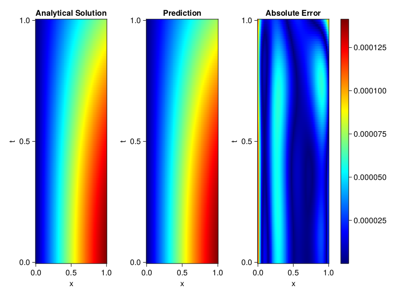
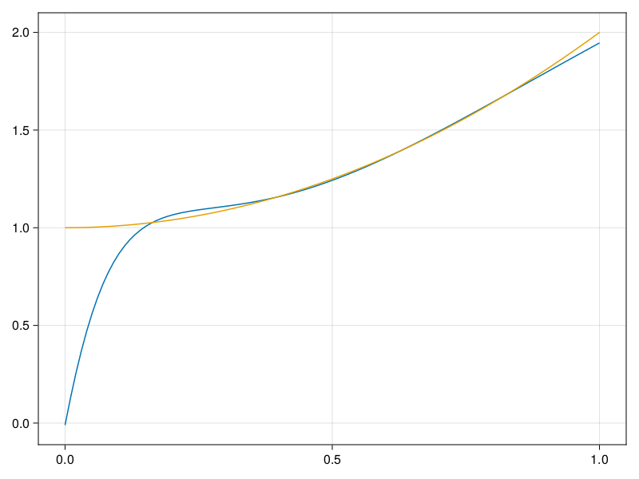

Inverse problem for the wave equation with unknown velocity field
We are going to sovle the wave equation.
using Sophon, ModelingToolkit, IntervalSets
using Optimization, OptimizationOptimJL
@parameters x, t
@variables u(..), c(..)
Dₜ = Differential(t)
Dₜ² = Differential(t)^2
Dₓ² = Differential(x)^2
s(x,t) = abs2(x) * sin(x) * cos(t)
eq = Dₜ²(u(x,t)) ~ c(x) * Dₓ²(u(x,t)) + s(x,t)
bcs = [u(x, 0) ~ sin(x),
Dₜ(u(x, 0)) ~ 0,
u(0, t) ~ 0,
u(1, t) ~ sin(1) * cos(t)]
domains = [t ∈ Interval(0.0, 1.0),
x ∈ Interval(0.0, 1.0)]
@named wave = PDESystem(eq, bcs, domains, [t,x], [u(x,t),c(x)])\[ \begin{align} \frac{\mathrm{d}^{2}}{\mathrm{d}t^{2}} u\left( x, t \right) =& c\left( x \right) \frac{\mathrm{d}^{2}}{\mathrm{d}x^{2}} u\left( x, t \right) + \cos\left( t \right) \left|x\right|^{2} \sin\left( x \right) \end{align} \]
Here the velocity field $c(x)$ is unknown, we will approximate it with a neural network.
pinn = PINN(u = FullyConnected((2,16,16,16,1), sin),
c = FullyConnected((1,16,16,1), tanh))
sampler = QuasiRandomSampler(500,100)
strategy = NonAdaptiveTraining(1, (10,10,1,1))NonAdaptiveTraining{Int64, NTuple{4, Int64}}(1, (10, 10, 1, 1))Next we generate some data of $u(x,t)$. Here we place two sensors at $x=0.1$ and $x=0.5$.
ū(x,t) = sin(x) * cos(t)
x_data = hcat(fill(0.1, 1, 50), fill(0.5, 1, 50))
t_data = repeat(range(0.0, 1.0, length = 50),2)'
input_data = [x_data; t_data]
u_data = ū.(x_data, t_data)1×100 Matrix{Float64}:
0.0998334 0.0998126 0.0997503 0.0996464 … 0.275281 0.267213 0.259035Finally we construct the inverse problem and solve it.
additional_loss(phi, θ) = sum(abs2, phi.u(input_data, θ.u) .- u_data)
prob = Sophon.discretize(wave, pinn, sampler, strategy; additional_loss=additional_loss)
@time res = Optimization.solve(prob, BFGS(), maxiters=1000)u: ComponentVector{Float64}(u = (layer_1 = (weight = [-0.034774551160592894 1.2459422310114425; -0.4113630715984802 -0.034581242049334125; … ; 0.7193066209299542 0.6097117517815445; -0.5211315787428605 -0.7220949739196059], bias = [0.001193271008303014; 0.037814519999212086; … ; 0.14447568529647503; -0.09207555375483863;;]), layer_2 = (weight = [-0.39651266925782286 0.3707982635326594 … 0.3658762604035595 -0.5507722087010885; 0.21117119668099776 -0.4308729811932213 … -0.15140209541598834 -0.05098054353976919; … ; 0.3040096422272973 -0.3890260594160493 … 0.1497868976727918 -0.05449745352121852; 0.17506667816473032 0.37610587001122237 … 0.474451055814475 -0.2287193010264396], bias = [-0.009330835930143071; 0.016149697865967125; … ; -0.02279284418624399; 0.09999539129948694;;]), layer_3 = (weight = [0.4354254782686528 -0.35625702653705693 … -0.2543127005585168 -0.04231663074530554; 0.5425127901692587 0.12474041410702076 … 0.12060500489415756 0.3103795351605915; … ; -0.026162315813180053 -0.0311700265391762 … 0.31166401190555243 0.12389936299459206; 0.3880946260580294 -0.13386740111484494 … -0.39081101760124765 0.19385927961818475], bias = [-0.04438293635380392; 0.053059350645192446; … ; 0.07187486283736137; -0.03596656959644504;;]), layer_4 = (weight = [0.48091314370097943 -0.14318931739441787 … 0.6884244166470023 -0.9132456624487164], bias = [-0.0010824159863556618;;])), c = (layer_1 = (weight = [-2.64261521837192; 2.905786384297494; … ; -1.33502471281734; 2.921399238750578;;], bias = [0.09546987352190661; 0.12348102580542072; … ; 0.07643516893914046; 0.32953617196968793;;]), layer_2 = (weight = [0.05835770234983254 -0.2438656863586806 … 0.435465945653531 0.08436721744094436; -0.5444237253678282 -0.26024601318322466 … -0.6402054271431679 -0.7425724913851914; … ; 0.4470639858368394 0.07678445637974951 … -0.3152661724997387 -0.08071104991600021; 0.33958397236043647 -0.7401274146861516 … 0.09334280457805294 -0.6401237427426488], bias = [0.08980449517581579; -0.156983367412505; … ; -0.19732218271450847; -0.022354220441471836;;]), layer_3 = (weight = [-0.6964867826776314 0.6174942115135792 … 0.9378836287963299 -0.8242134197303156], bias = [-0.1289659673727043;;])))Let's visualize the predictted solution and inferred velocity
using CairoMakie
ts = range(0, 1; length=100)
xs = range(0, 1; length=100)
u_pred = [pinn.phi.u([x, t], res.u.u)[1] for x in xs, t in ts]
c_pred = [pinn.phi.c([x], res.u.c)[1] for x in xs]
u_true = [ū(x, t) for x in xs, t in ts]
c_true = 1 .+ abs2.(xs) |> vec
axis = (xlabel="x", ylabel="t", title="Analytical Solution")
fig, ax1, hm1 = heatmap(xs, ts, u_true, axis=axis; colormap=:jet)
ax2, hm2= heatmap(fig[1, end+1], xs, ts, u_pred, axis= merge(axis, (;title = "Prediction")); colormap=:jet)
ax3, hm3 = heatmap(fig[1, end+1], xs, ts, abs.(u_true .- u_pred), axis= merge(axis, (;title = "Absolute Error")); colormap=:jet)
Colorbar(fig[:, end+1], hm3)
fig
fig, ax = lines(xs, c_pred)
lines!(ax, xs, c_true)
fig